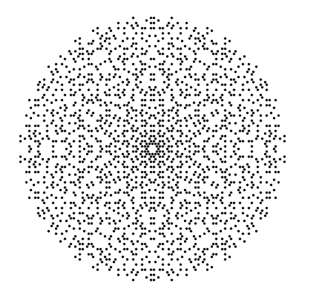

その他
ギャラリー

プログラムコード
整数aと自然数mに対してord_m(a)を求めるプログラム (Ruby)
3Dモデルを描画するプログラム (TypeScript)
アセンブリ言語で再帰を使って階乗を計算するプログラム (x86)
Mersenne Twisterが周期2^19937-1を持つことを確認するプログラム (Rust)
C#による簡単なグラフィックスプログラム (C#)
XorShiftの一例が周期最長になることを確かめるプログラム (Pari/GP)
プロジェクト
C言語のサブセットのインタプリタ (OCaml)
チューリングマシンのビジュアライズ (JavaScript)
アプリケーション
C subset in JS
Durand Kerner method
トップページ